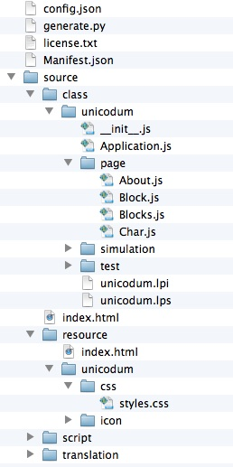
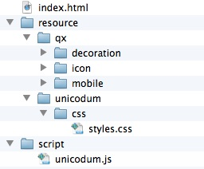

Status of qxotica Tools
Contents
What's New
Introduction
Requirements
Installing the qxotica tools
Getting started - Unicodum demo app
Getting started - creating a qooxdoo app
Developing a qooxdoo app
Future topics and to-do list
What's New
- 2015-08-23 release (0.0.3)
- The Qx_Proj package has been updated so it compiles with Lazarus 1.4.x.
Note that earlier versions of Lazarus are no longer supported.
- Unicodum demo app project has been updated for qooxdoo 5.0.
Note that the demo no longer supports earlier versions of qooxdoo.
- 2014-04-26 release (0.0.2)
- The Qx_Proj package has been updated so it compiles with Lazarus 1.2.x.
Note that earlier versions of Lazarus are no longer supported.
- Unicodum demo app project has been updated for qooxdoo 3.5.
Note that the demo no longer supports earlier versions of qooxdoo.
- Enhancements to the qooxdoo mobile framework, as well as to desktop
browsers (eg, Internet Explorer 11), mean that a mobile qooxdoo Web app
can now be used almost anywhere, with the tablet user interface used
in tablet and desktop browsers and the phone UI on smaller devices.
Introduction
These notes describe the status of the qxotica tools for creating mobile Web
apps with the qooxdoo JavaScript framework.
The tools consist of these parts:
- A package that adds to the Lazarus File | New dialog for creating a
qooxdoo JavaScript app that includes a Lazarus project for managing and editing
the app's JavaScript files. This allows you to develop both the JavaScript client
app and a Pascal server app with the same IDE.
- A small helper program that allows you to "compile" your qooxdoo app from
within Lazarus. This helper program runs the app's standard generate.py script.
If generate.py detects a JavaScript syntax error, the helper program reformats
the error message so that the Lazarus code editor will jump to the JavaScript
file and line where the error is located.
- The Unicodum demo app. This is a Unicode viewer consisting of a
qooxdoo-based mobile client and a choice of Pascal (FCGI) or PHP server app.
This app demonstrates many key qooxdoo features such as mobile UI widgets, CSS
styles, data binding, master-detail pages, customizing an app's config.json
file, and more.
All source code for the tools and demo app is released under the same
modified LGPL licence as Free Pascal.
Requirements
- qooxdoo SDK
qooxdoo.org
Download and unzip the qooxdoo SDK anywhere you want. Support for both mobile
and desktop browsers is included in the same SDK. (Note that the qxotica tools
currently only support developing mobile Web apps.)
Note that the qooxdoo tools require Python somewhere on your computer's
path. Python comes set up on OS X and some Linuxes; if needed, download and
install Python 2.x from here: python.org/.
Note also that qooxdoo now uses Sass to convert .scss files to .css. You can
download Sass from here: http://sass-lang.com.
- Lazarus IDE and Free Pascal compiler
www.lazarus.freepascal.org
- Web server
You don't need a Web server if you'll be developing a client-only Web app,
but you will need a Web server to develop a Pascal server app for your
qooxdoo app. You can use a local Web server installed on your development
computer.
- Windows. IIS is available for Windows.
Apache can also be used with Windows, as follows:
- Download the Apache .msi file and install.
- Initially don't make any changes to the httpd.conf file that the .msi
installer creates in Apache's conf folder.
- If you chose not to install Apache as a service, you can start it manually
from the console by changing to the Apache bin folder and entering httpd.
- You will probably need to specify localhost:8080 when running your local apps
if port 80 is not the default (see the httpd.conf file).
- OS X. Apache is included with OS X.
- To start Apache, open a Terminal and enter:
sudo apachectl start
- Apache will stay running even after rebooting. To stop it at any time:
sudo apachectl stop
- Make sure the CGI module is enabled in httpf.conf (in /etc/apache2).
- Log files are in /var/log/apache2.
- Linux. Apache may already be installed on your computer.
- qxotica source files
Check out the files from SourceForge. Change to the directory where you
want to put the qxotica files and enter this:
svn checkout svn://svn.code.sf.net/p/qxotica/code/trunk .
Installing the qxotica tools
- Install Qx_Proj package in Lazarus
Start Lazarus, choose Package | Open Package File, and select the
qx_proj.lpk file (under qx_proj in the qxotica checkout folder). Click
Compile to compile the package, then click Use | Install to install the package
in Lazarus.
Once installed, you'll see qooxdoo-related items in the Lazarus File | New
dialog.
- Compile the rungen helper program.
In order to "compile" a qooxdoo app (run its generate.py script) from Lazarus,
you need to compile the rungen helper program. In Lazarus, choose File | Open
and select the rungen.lpi file (under utils in the qxotica checkout
folder). Choose Run | Compile to compile it.
Getting started - Unicodum demo app
At this point you could just start Lazarus, choose File | New,
select qooxdoo JavaScript App, and enter the required information
to create a new mobile Web app. However, if you've never worked with qooxdoo
before, the resulting JavaScript files might not make much sense to you. So
let's start with the Unicodum demo app.
Once you get the Unicodum client app running in your browser and its Pascal
server app running under your local Web server, it should look like this
screenshot.
Note: Even though Unicodum is a mobile Web app designed for iOS
and Android devices, you can also run it in Firefox or any WebKit-based desktop
browser like Safari, iCab or Chrome. It will not work with older versions of IE,
however. To fully support both mobile and desktop browsers, you could create two
different clients since the qooxdoo mobile and desktop widgetsets are different.
Create the Unicode database
The Unicodum client app running in your browser will request Unicode data from
the server app. So the first thing we need to do is create a database of
Unicode data for use by the server app.
- Download files Blocks.txt and UnicodeData.txt from here:
http://www.unicode.org/Public/UNIDATA/
Place both files in the qxotica checkout folder's demos/Unicodum/db folder.
- Compile the cvtuni.pas program in demos/Unicodum/db.
fpc cvtuni.pas
- Create the Unicode database.
The Pascal server app expects a SQLite database, so run cvtuni like this:
cvtuni -s
This will create file Unicode.sqlitedb from Blocks.txt and
UnicodeData.txt.
Note: You must have the SQLite library somewhere on your path
to run cvtuni. SQLite comes pre-installed on OS X and some Linuxes, but with
Windows you may need to download it:
www.sqlite.org/.
If you want to use the PHP server script instead, run cvtuni like this:
cvtuni -i
This will create files Blocks.ini and UnicodeData.ini. Note that the
following steps assume you'll be running the Pascal server app.
Compile the Pascal server app
- Get FCGIApp package.
The Pascal getunicode server app requires the FCGIApp units from the
ExtPascal project. The source for the FCGIApp and related units is
here and consists of these files:
fcgiapp_pkg.lpk
fcgiapp_pkg.pas
FCGIApp.pas
BlockSocket.pas
ExtPascalClasses.pas
ExtPascalUtils.pas
cgigateway.lpi
CGIGateway.dpr
- Compile the FCGIApp package.
In Lazarus, choose Package | Open Package File, select fcgiapp_pkg.lpk
and click Compile. You don't have to install the package in Lazarus since it's
not a design package.
- Compile the getunicode server app.
In Lazarus, choose File | Open, navigate to qxotica's demos/Unicodum/pascal_server
folder and select getunicode.lpi, then choose Run | Compile to compile it.
- Compile CGIGateway app (optional).
If your Web server does not support FCGI (or if you're not sure), you can use
the intermediate CGIGateway app along with getunicode.
In Lazarus, choose File | Open, navigate to where you checked out or saved
the ExtPascal files and select cgigateway.lpi. Then choose Run | Compile to
compile it.
Copy the resulting cgigateway.cgi file to your Web server's cgi-bin folder
(on OS X, this is /Library/WebServer/CGI-Executables).
Note: If your Web server supports FCGI, you would instead copy
getunicode.fcgi (renamed on Linux or OS X) or getunicode.exe (Windows).
You would also need to edit the client app's config.json file and change
cgigateway.cgi to getunicode.fcgi or getunicode.exe.
- Copy Unicode.sqlitedb
Place Unicode.sqlitedb in demos/Unicodum/pascal_server so the server app
can find its database.
Prepare the qooxdoo client app
- Edit the client app's qooxdoo path.
With a text editor, navigate to qxotica's demos/Unicodum/client/unicodum
folder and open file config.json.
Scroll down a bit and look for QOOXDOO_PATH. Change its value to the path
to your qooxdoo SDK.
- Generate the client app's unicodum.js script.
In Lazarus, navigate to qxotica's demos/Unicodum/client/unicodum/source/class/unicodum
folder and open unicodum.lpi.
Choose Run | Compile to run the client project's generate.py script, which
will generate the unicodum.js script in the unicodum/source/script folder.
Important! Don't be alarmed if this takes a couple minutes.
The generate.py script creates a large cache the first time it's run.
Subsequent runs will take only a few seconds.
Run Unicodum
- Open the Pascal getunicode.lpi project in Lazarus as described above,
but this time choose Run | Run. The server app will run and wait for requests
from the client.
- Double-click index.html in qxotica's demos/Unicodum/client/unicodum/source
folder or open it manually in your browser. If the page doesn't display a list
of Unicode blocks, review the above steps for mistakes.
- Windows note: As indicated above, if the app doesn't work
you may need to change its URL to specify localhost:8080. With a text editor,
open the client app's config.json file and edit the uniurl setting under
source-usecgi.
(What about the PHP server?)
If your Web server supports PHP, you can test the getunicode.php script in
qxotica's demos/Unicodum/php_server folder. This script is functionally
equivalent to the Pascal getunicode program.
To tell the client app to use the PHP server script, you'll need to do two
things:
- With a text editor, open the client app's config.json file and edit the
uniurl setting under source-usephp. This setting needs to point
to where getunicode.php will be located on your Web server.
- Open unicodum.lpi in Lazarus and choose Project | Project Options. Click
Compilation and change the Execute before Command's last parameter from
source-usecgi to source-usephp. Close the dialog and choose
Run | Compile to refresh the unicodum.js script.
Getting started - creating a qooxdoo app
Creating the qooxdoo app
- In Lazarus, choose File | New and select qooxdoo JavaScript App
under Project.
- Fill in the required information. Note that the Type of Browser
control is disabled since only mobile apps are currently supported.
- If you leave the Master-Detail box unchecked, Lazarus will create a
simple one-page app. To add pages, choose File | New and select qooxdoo
JavaScript Page (Mobile).
- If you check the Master-Detail box, Lazarus will create a basic
two-page master-detail app, where the master page contains a list whose items
you supply and the detail page is used to display information about a selected
item. Look in the generated code for comments (//<--) indicating where
you need to add code.
- When you click OK, Lazarus will run qooxdoo's standard create-application.py
script, add boilerplate code to the resulting JavaScript files, and also create
a Lazarus project for managing and editing the JavaScript files.
- Important! If Lazarus throws a "division by zero" exception
after creating the qooxdoo project, for now just click OK to ignore the
exception - this appears to be a bug in Lazarus.
A qooxdoo app's folder structure
Figure 1 shows the Unicodum demo app's folders and files.
Figure 1. Folders and files in a typical qooxdoo app.

config.json - this file defines the "jobs" that generate.py can do; since
Unicodum can use two different server apps, custom jobs in this file
define the URLs for them.
generate.py - when you "compile" a qooxdoo app in Lazarus, this script is run
to generate the files under script (below).
license.txt - this file was added for Unicodum; not created for new app.
Manifest.json - information about the app.
Under source/class:
Application.js - a qooxdoo mobile app is a loosely bound collection of pages
managed by this file.
page - The Unicodum app has four pages, each in its own JavaScript file in
this folder.
unicodum.lpi - Lazarus project info file; open this in Lazarus to edit
the app's JavaScript files.
index.html - double-click this file to load the client app into your browser.
Under source/resource:
styles.css - add CSS styles to this file for use with widgets in your pages.
(Edit: qooxdoo now looks for your styles in _styles.scss in source/theme/appname/scss.)
If you have additional local files that your app needs (images, JSON, etc.),
place them in the project's folder under resource.
Under source/script:
Files generated by generate.py are placed here.
Preparing to run a qooxdoo app
- Before running a qooxdoo app, choose Run | Compile in Lazarus. This will
save any changes to the app's files and then run the app's generate.py script.
If the script detects a JavaScript syntax error, Lazarus will display the error
in its Messages windows and jump to the file and line where the error is located.
- Important! As indicated above, don't be alarmed if "compiling"
takes a couple minutes the first time you do it. The generate.py script creates
a large cache to speed up subsequent runs; the next run should only take a few
seconds.
- You can also refresh your app manually by running the generate.py script
and specifying the "source" job:
generate.py source
- Note that since the Unicodum demo app can use either of two server apps,
its config.json file contains additional custom jobs for specifying which
server app to use. With Unicodum, you would specify the "source-usecgi" or
"source-usephp" job. You can define additional custom jobs for your apps
as well - open and review Unicodum's config.json for examples. To specify a
custom source job in Lazarus, choose Project | Project Options, click
Compilation and edit the Execute before Command's last parameter.
Running a qooxdoo app
- Open the index.html file in the app's source folder to run the app in
your browser.
- Since JavaScript is a dynamic, loosely typed language, many errors will
only be caught at runtime. When debugging a qooxdoo app, it's useful to open
your browser's JavaScript console to view debug and error messages. You can
also click and hold on the app's navigation bar to view qooxdoo log messages.
- Most desktop browser provide optional add-ins that are useful for
debugging. For example, Firefox provides Firebug, etc.
Deploying a qooxdoo app
- Run the generate.py script and specify the "build" job:
generate.py build
This will create a single .js file containing your JavaScript code and the
qooxdoo widget code it uses. By default whitespace and comments will be
removed to reduce the file's size and variable names will be obfuscated.
- Note that since the Unicodum demo app can use either of two server apps,
its config.json file contains additional custom jobs for specifying which
server app to use. With Unicodum, you would specify the "build-usecgi" or
"build-usephp" job.
- The build job's default mobile target is iOS, so it creates a folder
named build-ios. Rename and copy this folder to a Web server to deploy
the app.
- Note that the build-ios folder will contain many small icon and image files
used by the various qooxdoo widgets. By including all of these files in your
initial deployment, this simplifies updating your deployed app. In most cases,
if you make changes to your app, you only need to redeploy its updated .js file
and any resource files that you've modified.
Figure 2. Folders and files in a typical qooxdoo deployment.

Developing a qooxdoo app
Documentation
- The qooxdoo manual, qooxdoo.pdf, is included with the SDK under
documentation/manual. It's also online at
qooxdoo.org/docs.
- The qooxdoo API viewer is online at
demo.qooxdoo.org/current/apiviewer/#qx.
The mobile widgets are listed under qx.ui.mobile. To help in deciding which
mobile widgets to use, try out the qooxdoo Mobile Showcase app:
demo.qooxdoo.org/devel/mobileshowcase-ios/index.html.
- JavaScript references are everywhere. Here are two:
developer.mozilla.org/en-US/docs/JavaScript
and www.w3schools.com/js/default.asp.
- Most text formatting in a Web app is done via CSS styles, either in-line
or by specifying a style for a widget. A CSS reference is here:
www.w3schools.com/cssref/default.asp.
See the Unicodum demo app's code for examples of both kinds of styles.
- When developing an app, you'll often be running the client app locally while
querying an online server. This type of cross-domain Ajax call is not permitted
by the browser. Instead, you can use JSON-P if the server app supports it.
JSON-P documentation is here: www.json-p.org/.
See the Pascal and PHP getunicode server apps for examples of how to implement
JSON-P.
- To simulate various iOS devices, run your app in the
iPhone Simulator included with Xcode for OS X. To simulate Android devices,
run your app in the Android emulator included with the Android SDK.
JavaScript gotchas
Here are a few things that Pascal programmers need to remember when starting
out with JavaScript.
- Remember that JavaScript is case-sensitive.
- Use "==" for equality, not "=". "=" is reserved for assignment.
- Use "!=" for not-equal, not "<>".
- Use "&&" instead of "and" and "||" instead of "or".
- Always put parentheses ( ) around an if statement's clause.
- Use "return" to exit a function, optionally returning the function result.
- To call a function without passing any arguments, be sure to include an
empty () after the function name.
Future topics and to-do list
Support for desktop browser apps (if interest warrants). --> In general,
qooxdoo mobile apps now work fine in desktop browsers too.
Discuss converting qooxdoo app to native mobile app via PhoneGap.
--> See tech note 1 (QxoticaTechNote1.html).
- Discuss various offline and online storage options available to Web apps
(session, local, Web SQL Database, IndexedDB, Dropbox).
Copyright 2012 by Phil Hess.
macpgmr (at) icloud (dot) com
First posted Oct. 3, 2012; last edited March 18, 2017.
{kind=link}